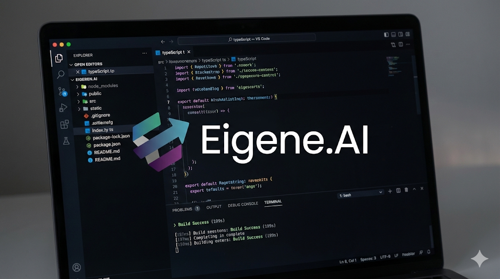
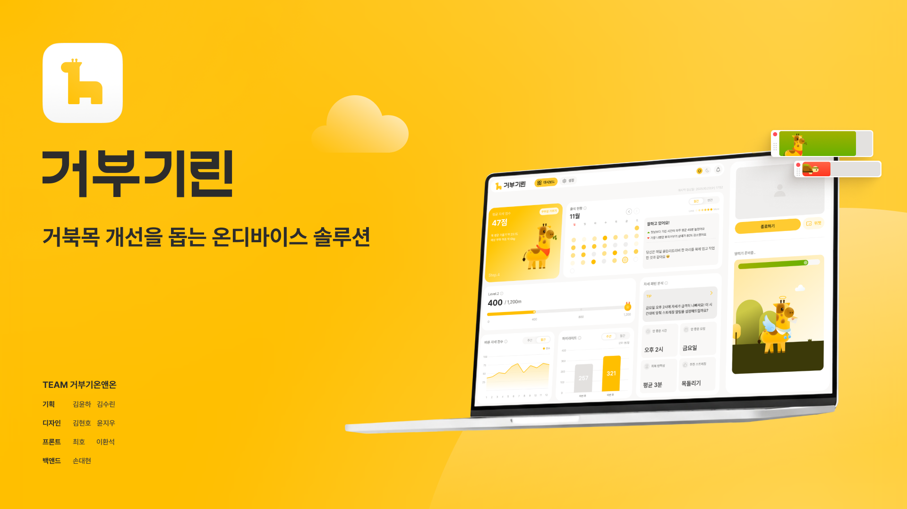

안녕하세요,
프론트엔드 개발자 최호의 포트폴리오 입니다

프로젝트 목록

아이겐 코리아 인턴쉽
- 2p프로젝트 소개, 담당 역할, 핵심 기술 이슈 ① - API 전환 및 Recoil 설계
- 3p핵심 기술 이슈 ② - 어드민 i18n 검증 자동화
- 4p핵심 기술 이슈 ③ - TypeScript 3v → 5v 마이그레이션

거부기린
- 5p프로젝트 소개, 기술스택, 프로젝트 화면
- 6p핵심 기술 이슈 ① - Zustand 상태관리 라이브러리를 사용한 이유
- 7p핵심 기술 이슈 ② - UX 설계 (always-on-top + 알림)
- 8p핵심 기술 이슈 ③ - 성능 최적화 (번들 감소)
- 1 -